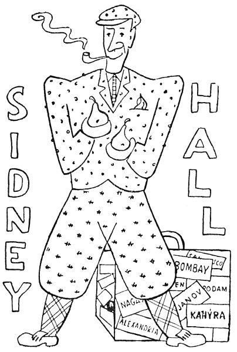

4. Kterak slavný Sidney Hall kouzelníka chytil
To všechno četl v novinách slavný Sidney Hall, americký detektýv, zamyslil se hluboce a rozhodl se, že zkusí sám, chytí-li kouzelníka. Přestrojil se tedy za milionáře, vzal do kapsy revolver a jel do Evropy.
Když sem přijel, představil se hned policejnímu prezidentovi. Ten mu tedy všechno vyložil, jak honili kouzelníka, a skončil: „Podle toho všeho je už docela nemožné dostat toho zlosyna před soudnou stolici.“
Sidney Hall se usmál: „Do čtyřiceti dnů vám ho přivedu zatčeného.“
„Nemožno,“ zvolal prezident.
„Vsaďme se o mísu hrušek,“ řekl Sidney Hall. Sidney Hall totiž tuze rád jedl hrušky a stejně rád se vsázel.
„Platí,“ zvolal prezident. „A jak to, prosím vás, uděláte?“
„Především tak,“ povídá Sidney Hall, „že budu muset dělat cestu kolem celého světa. Ale na to bych potřeboval hromadu peněz.“
Dal mu tedy prezident hromadu peněz, a aby se zdál chytrý, povídá: „Aha, už tuším váš plán. Ale musíme věc udržet v tajnosti, aby se kouzelník nedověděl, že ho honíme.“
„Naopak,“ řekl detektýv, „hned zítra dáte do všech novin na světě, že slavný Sidney Hall se zavázal chytit kouzelníka do čtyřiceti dnů. Zatím mám tu čest se vám poroučet.“
Rovnou pak šel pan Sidney Hall k jednomu proslulému cestovateli, který už dělal cestu kolem světa za padesát dní, a povídá: „Vsaďme se, že udělám cestu kolem světa za čtyřicet dní.“
„Nemožno,“ řekl cestovatel. „Pan Fogg udělal cestu kolem světa za osmdesát dní, já sám za padesát dní, a rychleji to už ani nejde.“

„Vsaďme se,“ na to Sidney Hall, „o tisíc dolarů, že to udělám.“
Tak se tedy vsadili.
Ještě té noci Sidney Hall odjel. Za týden přišel od něho telegram z Alexandrie v Egyptě: „Jsem na stopě. Sidney Hall.“
Po sedmi dnech zase přiletěl telegram z Bombaje v Indii: „Kličky se stahují. Vše jde výborně. Dopis následuje. Sidney Hall.“
O něco později došel dopis z Bombaje, ale byl psán tajným písmem, kterému nikdo nerozuměl.
Po dalších osmi dnech přiletěl z Nagasaki v Japonsku poštovní holub s lístkem na hrdélku, kde stálo: „Blížím se k cíli. Očekávejte mne. Sidney Hall.“
Pak přišla depeše ze San Franciska v Americe: „Mám rýmu. Jinak vše v pořádku. Uchystejte hrušky. Sidney Hall.“
Třicátého devátého dne po odjezdu došel konečně telegram z Amsterodamu v Holandsku: „Přijedu zítra večer v 7 hodin 15 minut. Uchystejte hrušky. Nejraději máslovky. Sidney Hall.“
Čtyřicátého dne v 7 hodin 15 minut večer přirachotil vlak na nádraží. Z vlaku vyskočil pan Sidney Hall a za ním sestoupil kouzelník, vážný, bledý a s očima sklopenýma. Všichni detektývové čekali na nádraží a divili se tuze, že kouzelník není ani spoután. Než Sidney Hall jim jen pokynul rukou a řekl: „Čekejte mne, hoši, dnes večer v hospodě U modrého psa. Musím jen toho pána dovézt do vězení.“ Vstoupil pak i s kouzelníkem do drožky, ale ještě si vzpomněl a volal z vozu: „A ty hrušky mně tam přineste!“
Večer tedy čekala mísa překrásných hrušek, obklopená všemi detektývy, na pana Sidney Halla. Užuž si všichni mysleli, že ani nepřijde, když tu se otevřely dveře do hospody a vešel prastarý, vetchý dědeček, co prodává po hospodách rybičky a okurky.
„Dědečku,“ řekli mu detektývové, „my asi nic nekoupíme.“
„To je škoda,“ řekl dědeček, a najednou se začal celý třást a klepat, chrčel, kuckal, dusil se a klesl bez dechu na židli.
„Proboha,“ vykřikl jeden detektýv, „snad nám tu neumře!“
„Ne,“ kuckal dědeček a svíjel se, „já to už nevydržím!“ A tu všichni viděli, že se vlastně dědeček tak hrozně směje a nemůže ani přestat. Slzy mu tekly, hlas přeskakoval, tváře modraly a jen už sténal: „Děti, děti, já to nevydržím!“
„Dědečku,“ řekli detektývové, „co tu chcete?“
Tu dědeček vstal, potácel se ke stolu, vybral si z mísy nejkrásnější hrušku, oloupal ji a jedním rázem snědl. Teprve pak si strhl falešnou bradu, falešný nos, falešné šediny a modré brýle a ukázal hladce oholenou, usměvavou tvář Sidney Halla.
„Hoši,“ řekl Sidney Hall omluvně, „nezlobte se na mě; ale já jsem musel po celých čtyřicet dní přemáhat smích.“
„Kdy jste kouzelníka chytil?“ ptali se detektývové jedním hlasem.
„Teprve včera,“ pravil slavný Sidney Hall; „ale už hned od začátku mně bylo do smíchu, jak ho napálím.“
„A jak jste ho,“ naléhali detektývové, „prosím vás, dostal?“
„Inu,“ povídá Sidney Hall, „to je vám celá historie. Já vám to, hoši, povím, jen co si sním ještě tuhletu hrušku.“
Když ji snědl, začal asi takhle: „Poslouchejte, kolegové, především a hlavně vám povím to, že pořádný detektýv nesmí být osel.“ Přitom se rozhlédl dokola, jako by snad mohl nalézti nějakého osla mezi přítomnými.
„A co dál?“ ptali se detektývové.
„Co dál?“ řekl Sidney Hall. „Za druhé musí být drbaný. A za třetí,“ pokračoval loupaje si novou hrušku, „musí mít trochu za ušima. Víte snad, jak se chytá myš?“
„Na špek,“ řekli detektývové.
„A víte, nač se chytá ryba?“
„Na červa či žížalu.“
„A víte, nač se chytá kouzelník?“
„Nevíme.“
„Kouzelník,“ řekl poučně Sidney Hall, „se chytá jako každý jiný člověk: totiž na vlastní slabost. Nejdřív se musí nalézt, jakou má slabost. A víte, hoši, jakou měl slabost kouzelník?“
„Nevíme.“
„Zvědavost,“ prohlásil pan Sidney Hall. „Všechno dovedl kouzelník, ale byl zvědavý. Ukrutně zvědavý. Ale teď si musím sníst tuhle hrušku.“
Když ji snědl, pokračoval: „Vy jste si všichni mysleli, že stíháte kouzelníka. Ale zatím kouzelník stíhal vás. Šel za vámi a nespouštěl vás z očí. Byl strašně zvědavý a chtěl všechno vidět, co proti němu podnikáte. Pořád se točil za vámi, když jste ho honili. A na jeho zvědavosti jsem postavil svůj plán.“
„Jaký plán?“ křičeli detektývové dychtivě.
„Inu, takovýhle. Ta cesta kolem světa, to byl, hoši, jen výlet pro zábavu. Já už jsem chtěl dávno dělat cestu kolem světa. Jenom jsem neměl jaksi příležitost. Ale když jsem přišel sem, věděl jsem hned, že kouzelník půjde pořád za mnou, aby viděl, jak ho budu chytat. Taková už je jeho zvědavost. Nu což, řekl jsem si, potáhnu ho za sebou kolem světa; sám přitom něco uvidím a jeho neztratím z očí. Totiž on mne neztratí z očí. A aby byla jeho zvědavost ještě větší, vsadil jsem se, že to pořídím za čtyřicet dní. Ale teď si sním tuhle krásnou hrušku.“
Když ji dojedl, řekl: „Není nad hrušky. Tedy vzal jsem si revolver a peníze, přestrojil jsem se za švédského obchodníka a jel jsem. Nejdřív do Janova; víte, hoši, to je v Itálii, a když tam člověk jede, vidí celé Alpy. Je vám to výška náramná, ty Alpy; když se na vrcholu Alp utrhne kámen, padá dolů tak dlouho, že zatím docela obroste mechem, než dopadne. A z Janova jsem pak chtěl jet s lodí do Alexandrie v Egyptě.
Janov je tuze krásný přístav, tak krásný, že tam každá loď běží už zdaleka sama. Na sto mil od Janova přestanou v parnících topit, kola se netočí a plachty se stáhnou, ale loď se už tak těší do Janova, že tam dopluje sama od sebe.
Má loď měla vyjet ve čtyři hodiny odpoledne punkto. Ve tři hodiny padesát minut běžím do přístavu, ale cestou vidím plakat malou holčičku.
‚Bobečku,‘ povídám jí, ‚co pláčeš?‘
‚Béé,‘ naříká bobeček, ‚já jsem se ztjatila!‘
‚Když ses ztratila,‘ povídám, ‚tak se hledej.‘
‚Ale já jsem ztjatila maminku,‘ bečí bobeček, ‚a nevím, kde je.‘
‚To je jiná,‘ povídám, vezmu holčičku za ruku a hledám její maminku. Kluci, hodinu jsem běhal po Janově, než jsem tu maminku našel. Ale co teď? Bylo čtyři hodiny padesát minut. Má loď musela už dávno odjet. Kvůli bobečkovi, myslil jsem si, jsem propásl celý den. S neveselou šel jsem do přístavu, a tu, koukám, ta loď tam ještě stojí. Já honem do ní. ‚Nu, švejdo,‘ povídá mně kapitán lodi, ‚dal jste si na čase. Byli bychom vám už dávno ujeli, kdyby se nám tak nějak divně nebyla zapletla kotva na dně, že jsme ji po celou hodinu nemohli vytáhnout.‘ Já, toť se ví, jsem byl tomu rád. Ale teď bych si snad mohl sníst hrušku.“
Když ji dojedl, řekl: „Ta byla, panečku, tuze dobrá.“ Tak tedy jsme vyjeli na Středozemní moře. To je vám tak krásně modré, že člověk neví, kde je obloha a kde je moře. Proto jsou všude na lodích i na břehu tabulky a na těch je napsáno, kde je nahoře a kde je dole. Jinak by si to člověk spletl. Však tuhle, povídal nám kapitán, si to jedna loď spletla a místo po moři se pustila po nebi; a protože je nebe nekonečné, dosud se nevrátila a nikdo neví, kde je. A po tom moři jsme dopluli do Alexandrie. Alexandrie je město veliké, protože bylo založeno od Alexandra Velikého.
Z Alexandrie jsem poslal ten telegram, aby si kouzelník myslel, že se o něho starám. Ale já se o něho pranic nestaral, jen jsem ho všude tušil. Když rackové nebo kormoráni obletovali loď nebo albatros v dáli brázdil svým rychlým křídlem oblohu, věděl jsem, že snad mezi nimi je kouzelník a doprovází mne. Když rybička vypoulila na mne oči z hlubiny mořské, cítil jsem, že snad on na mne pohlíží jejíma očima. A když vlaštovky ve svém letu přes moře se snesly na ráhna naší lodi, byl jsem si skoro jist, že ta bílá mezi nimi, ta nejkrásnější ze všech, je on.
Ale když už jsem byl v Alexandrii, zajel jsem si po posvátné řece Nilu dolů do Káhiry. To je vám město tak veliké, že by se samo v sobě nevyznalo, kdyby tam nebyli postavili vysokánské mešity a minarety. Ty je vidět z takové dálky, že i nejvzdálenější domky se podle nich vyznají, kde jsou.
Blízko Káhiry jsou, hoši, pyramidy. Ty se tak jmenují proto, že jsou opravdu pyramidálně veliké. A pak tam jsou Memnónovy kolosy. To jsou sochy tak ohromné, že jim to je samotným trapné. Proto si sedly a zahrabaly si nohy do písku, aby vypadaly menší. Vůbec Egypt je země zvláštní a veliká.
U Káhiry jsem se šel vykoupat do Nilu, protože tam je tuze horko. Měl jsem na sobě jen plavky a revolver a ostatní šaty jsem nechal na břehu. Tu vám vyleze na břeh obrovský krokodýl a sežral mně ty šaty se vším všudy, i s hodinkami a penězi. Jdu tedy na něj a vypálím šest ran z revolveru. Ale kulky se odrazily od jeho krunýře, jako by byl z ocele. A krokodýl se mně hlasitě vysmál. Ale teď si sním hrušku.“
Když byl hotov s hruškou, pokračoval pan Sidney Hall ve svém vypravování: „To víte, bando, že každý krokodýl umí plakat a křičet jako malé dítě. Tím láká lidi do vody. Člověk si myslí, že se tam topí dítě, a běží mu na pomoc, a tu ho krokodýl chytne a sežere. Ale tenhle krokodýl byl tak starý a moudrý, že se naučil nejen plakat jako dítě, nýbrž i nadávat jako námořník, zpívat jako operní zpěvačka a vůbec mluvit jako člověk. Vždyť prý přijal i tureckou víru.“
Ale mně bylo trochu ouzko. Co si počnu bez šatů a peněz? Tu, kde se vzal, tu se vzal, stál vedle mne černý Arab a povídá té obludě: ‚Ty, krokodýle, ty jsi sežral šaty i s hodinkami?‘
‚Sežral,‘ řekl krokodýl.
‚Hloupej,‘ povídá Arab, ‚vždyť ty hodinky nebyly nataženy. K čemu ti budou hodinky, když nejdou?‘
Krokodýl chvilku uvažoval a pak mi povídá: ‚Ty, já bych trochu otevřel pusu; sáhni mně do žaludku, vyndej ty hodinky, natáhni je a dej je zas na místo.‘
‚I což,‘ jářku, ‚udělal bych to, ale ty bys mi ukousl ruku. Víš ty co? Já ti strčím kolmo mezi tvé čelisti tuhle hůl, abys nemohl svou šerednou tlamu zavřít.‘
‚Já nemám šerednou tlamu,‘ řekl krokodýl. ‚Ale když jinak nedáš, strč tu hůl mezi mé ctihodné čelisti a dělej honem.‘
Já, toť se ví, jsem to udělal, vytáhl jsem mu ze žaludku nejen hodinky, nýbrž i své šaty, boty a klobouk a povídám: ‚Tu hůl, starý, ti teď nechám v hubě na památku.‘ Krokodýl chtěl nadávat, ale nemohl, protože měl tlamu dokořán a v ní vzepřenou hůl; chtěl mne sežrat, a nemohl; chtěl prosit, a nemohl. Já jsem se klidně ustrojil a řekl jsem mu: ‚A abys to věděl, máš šerednou, protivnou, hloupou tlamu,‘ a naplil jsem mu do ní. Tu vyhrkly krokodýlovi vztekem slzy.
Když jsem se ohlédl po Arabovi, který mně tak chytře pomohl, byl tentam. A ten krokodýl podnes plove po Nilu s tlamou dokořán.
Z Alexandrie jsem zase vyplul do Bombaje, přestrojen za indického rádžu čili knížete. Hoši, to mi to slušelo! Nejdříve jsme pluli po Rudém moři. To se tak jmenuje, protože se pořád stydí, že není větší. Když byla všechna moře ještě mladá a maličká a měla teprve vyrůst, hrálo si Rudé moře na břehu s arabskými dětmi a přitom mu tak uběhl čas, že zapomnělo růst, třebaže mu pánbůh uchystal kolem dokola na pouštích pěkný písek, aby si z něho udělalo dno. Teprve v poslední chvíli si na to vzpomnělo, ale už mohlo vyrůst jen do délky, a ještě nechalo pruh suché země mezi sebou a Středozemním mořem, se kterým se mělo spojit. Nad tím se trápilo tak, že tuhle se lidé nad ním slitovali a spojili obě moře průplavem. Od té doby se Rudé moře už tak nečervená.
Když jsme už byli za ním, spal jsem jednou ve své kajutě. Najednou někdo zaťuká na mé dvéře. Jdu otevřít – na chodbě nikdo. Chvíli čekám, a tu slyším, že se k mé kajutě blíží dva plavci. ‚Zabijeme toho rádžu,‘ šeptá jeden, ‚a sebereme mu perly a diamanty, co nosí na šatech.‘ Namouduši, hoši, všechny mé perly a diamanty byly skleněné. ‚Počkej tady,‘ šeptá druhý plavec, ‚zapomněl jsem nahoře nůž.‘ Zatímco běžel pro nůž, chytil jsem druhého plavce za krk, zacpal jsem mu ústa, oblékl jsem ho za rádžu a svázaného položil na svou postel. Pak jsem si vzal jeho šaty a postavil jsem se na jeho místo přede dvéře. Když přišel ten druhý s nožem, povídám mu: ‚Už rádžu nezabíjej, já jsem ho zardousil; ale jdi a seber mu perly a diamanty, zatímco já budu tady dávat pozor.‘ Jen vlezl ten druhý do mé kajuty, hned jsem ho zamkl na klíč a jdu ke kapitánovi. ‚Kapitáne,‘ jářku, ‚dostal jsem divnou návštěvu.‘ Když kapitán viděl, co se stalo, dal vymrskat oběma plavcům; ale já jsem svolal všechny ostatní, ukazuju jim své perly a diamanty a povídám: ‚Abyste viděli, děti a lotři, jak málo záleží moudrému na perlách a diamantech, tak flink!‘ A hodil jsem všechny své skleněné klenoty do moře. Tu se mi všichni začali klanět a volali: ‚Ó moudrý je rádža a vznešený!‘ – Ale kdo to zaklepal na mou kajutu a zachránil mi život, to podnes nevím. A teď si sním tuhle pěknou, velikou hrušku.“
Ještě s ní nebyl hotov, a už mluvil dál plnými ústy: „Tak jsme šťastně dopluli do Bombaje v Indii. Indie, hoši, je země veliká a zvláštní. Když na to přijde, je tam tak horko, že je tam i voda načisto suchá a musí se polévat, aby se nevypařila. Lesy jsou tam tak husté, že v nich není místa ani pro stromy, a tomu se pak říká prales. Když zaprší, roste všechno náramně; i celé kostely vyrostou ze země jako u nás houby, a proto je například v Benaresu tolik kostelů. A opic je tam jako u nás vrabců, a jsou tak krotké, že vám vlezou i do sednice. Někdy se člověk ráno probudí a najde ve své posteli místo sebe sama opici. Tak jsou ty potvory krotké. A hadi jsou tam tak dlouzí, že když se takový had ohlídne na svůj ocas, nepozná ani, že je to jeho vlastní ocas, a myslí si, že ho to honí nějaký had ještě větší, než je on sám; tu se dá před ním na útěk a bídně zahyne uštváním. A to vám ještě nic nepovídám o slonech, kteří tam jsou doma. Vůbec, hoši, Indie je země veliká.“
Z Bombaje jsem zase poslal telegram a pak ten dopis tajným písmem, aby si kouzelník myslel, že mám bůhvíco za lubem.“
„Co bylo psáno v tom dopise?“ ptali se detektývové.
„Já,“ chlubil se honem jeden detektýv, „jsem ten váš dopis napolovic rozluštil.“
„To jste chytřejší než já,“ děl na to slavný Sidney Hall, „protože já bych ho sám rozluštit nemohl. Byly to jen čiryčáry, které měly vypadat jako tajné písmo. Ale z Bombaje jsem pak jel vlakem do Kalkaty. V Indii jsou vám ve vlacích místo sedadel koupací vany, aby člověku nebylo tak horko. Jeli jsme pouštěmi a pralesy. V houštinách viděl jsem svítit strašné oči tygří a na říčních brodech jsem se potkával s moudrým pohledem vznešených očí bílého slona. Skalní orel předháněl náš vlak a duhový motýl se zatřepetal u oken vlaku. Ve všem tom, hoši, jsem cítil blízkost kouzelníkovu.
Blízko Kalkaty jsme se přiblížili k posvátnému Gangu. To jest vám řeka tak široká, že když hodíte kamenem na druhý břeh, letí ten kámen půldruhé hodiny. Když jsme zrovna jeli po břehu, prala tam nějaká ženská prádlo. Tu se příliš nahnula nebo co, zkrátka spadla do vody a tonula. Já hned skočím z rozjetého vlaku a vytáhnu tu indickou nešiku na břeh. Myslím, hoši, že by to udělal každý z vás.“
Detektývové souhlasně zabručeli.
„No ale,“ pokračoval Sidney Hall, „abych nelhal, tohleto jsem tak lacino nepořídil. Když jsem se s tou ženskou ve vodě tahal, přišel na mne neřád aligátor a šeredně mi pokousal ruku. Ženskou jsem na břeh dostal, ale sám jsem se poroučel na zem. Čtyři dny mne pak ošetřovaly indické báby, a – slovem – tuhle mám na památku zlatý prsten. Zkrátka, kluci, lidé dovedou být všude na světě vděčni, i když jsou to černí pohani, a takový naháč v Indii není o nic horší člověk nežli někdo z nás, a basta fidli.
Ale co platno, pět dní jsem ztratil. A s nimi jsem ztratil i svou sázku. Seděl jsem na břehu a myslil jsem si: Teď už to nepořídím do čtyřiceti dnů. Tisíc dolarů sázky v pekle. A mísa hrušek také v pekle. A co tak myslím, připlula tam taková, no, džunka se tomu říká, taková hloupá lodička s plachtami z lýkových rohoží. A na ní tři hnědí tatrmani, Malajci, a zubí se na mne, jako bych byl k jídlu. ‚Nia nania pche hem Nagasaki,‘ drmolí na mne jeden z nich. ‚Ach ty kašpare,‘ povídám, ‚copak ti rozumím?‘ ‚Nia nania pche hem Nagasaki,‘ mele zase a směje se na mne způsobem, o kterém si snad myslel, že je líbezný. Ale Nagasaki jsem rozuměl. To je přístav v Japonsku, kam jsem zrovna chtěl plout. ‚Do Nagasaki,‘ povídám, ‚v takovéhle bečce? Ani za nic.‘ ‚Nai,‘ na to on, a brebentí ještě něco, ukazuje na svou džunku, na nebe, na své srdce, a zkrátka jako abych jel s ním. ‚Ani za mísu hrušek,‘ povídám. A tu ti tři hnědí satani vám na mne skočili, porazili mne na zem, zabalili do rohoží a hodili do své džunky jako balík. Co jsem si při tom myslel, nebylo tuze hezké, ale nakonec jsem v těch rohožích usnul. Když jsem se probudil, nebyl jsem v džunce, ale na mořském břehu, nad hlavou místo slunce velikou chryzantému a stromy kolem byly pěkně olakované, každé zrníčko písku na břehu čistě umyté a ohlazené, a podle té čistoty jsem poznal, že jsem v Japonsku. A když jsem potkal prvního copatého, žlutého jelimánka, ptám se ho: ‚Kde bych, medle, občane, asi byl?‘ A on se směje a povídá: ‚Nagasaki.‘
Hoši,“ pokračoval pan Sidney Hall zamyšleně, „říká se, že nejsem hloupý. Ale abych pochopil, jak jsem se v mizerné džunce dostal přes noc z Kalkaty do Nagasaki, když nejrychlejší loď to udělá za deset dní, – na to jsem, odpusťte, trochu hloupý. Ale teď si sním tuhle hrušku.“
Když ji pečlivě oloupal a snědl, mluvil dále: „Japonsko je země veliká a zvláštní a lid je tam veselý a dovedný. Umějí dělat tak tenké čajové číšky z porculánu, že už na ně není ani žádného porculánu potřeba; vezme se jenom palec, zakrouží se jím ve vzduchu, pak se to navrchu pěkně omaluje, a číška je hotova. A kdybych vám řekl, jak Japonci dovedou malovat, ani byste mi to nevěřili. Viděl jsem jednoho malíře, kterému vypadl štětec z ruky na bílý papír; a jak se ten štětec po papíře kutálel, vymaloval vám krajinu s domky a stromy, lidi na ulici a na nebi divoké husy. Když jsem se tomu divil, povídá mi ten malíř: ‚To nic není proti tomu, co dovedl můj nebožtík učitel. Jednou si za deště zablátil své ctihodné papuče. Když bláto trochu oschlo, ukázal nám je: na jedné papuči bylo blátem vymalováno, jak psi a myslivci honí zajíce, a na druhé, jak si hrají děti na školu a učitele.‘
Z Nagasaki jsem pak jel parníkem do San Franciska v Americe. Na té cestě se nestalo nic zvláštního, ledaže náš parník v bouři ztroskotal a potápěl se. Všichni jsme honem naskákali do záchranných člunů, ale když už byly načisto plné, volají dva plavci v potápějící se lodi: ‚Tady je ještě nějaká panička. Nemáte tam na člunu pro ni trochu místa?‘ ‚Nemáme,‘ křičeli někteří; ale já jsem zavolal: ‚I máme, jen ji sem dejte!‘ Tu oni mne hodili do vody, aby tedy pro ni udělali ve člunu místo. No, hoši, tuze jsem se tomu ani nebránil; panička, myslel jsem si, má vždycky přednost. Když se loď potopila a čluny odpluly, byl jsem sám a sám na širém moři. Sedl jsem si na nějaké prkno a houpal jsem se na vlnách; bylo by to jinak docela hezké, až na to veliké mokro. Plul jsem tak den a noc a už se mně jaksi zdálo, že to všechno vezme špatný konec. Ale tu vám ke mně připluje plechová krabice a v ní jsou rakety.
Co s raketami? myslel jsem si nejdřív, hrušky by mně byly milejší. Ale pak jsem se dovtípil lepšího. Když přišla černočerná noc, zapálil jsem první raketu. Letěla vám převysoko a zářila jako meteor. Druhá raketa byla hvězdicová a třetí sluncová; čtvrtá raketa byla zpívající a pátá vyletěla tak vysoko, že uvázla mezi hvězdami a svítí tam podnes. Co jsem se takhle bavil, připlula veliká loď a vzala mne na palubu. ‚Človíčku,‘ povídá mně kapitán, ‚nebýt těch raket, byl byste se tu utopil. Ale že jsme z dálky deseti mil viděli zářit rakety, mysleli jsme si, že nás tu někdo volá na pomoc.‘ A na památku toho hodného kapitána sním tady tu hrušku.“
Když ji snědl, mluvil vesele dále: „V San Francisku jsem tedy vystoupil na americkou půdu. Amerika, hoši, je má vlast a – zkrátka – Amerika je Amerika. Kdybych vám něco o ní vypravoval, stejně byste mi to nevěřili; tak veliká a zvláštní země to je. Povím jen, že jsem vstoupil na Velikou pacifickou dráhu a jel do Nového Yorku. Tam vám jsou domy tak vysoké, že už je ani dostavět nemohou. Než vylezou zedníci a pokrývači po žebříku zdola nahoru, je už poledne; i snědí nahoře oběd, který s sebou přinesli, a lezou zase dolů, aby se dostali večer do postele, a tak to jde den za dnem. Vůbec, není nad Ameriku; a komu se nelíbí jeho vlast tak jako mně Amerika, ten je starý osel.“
A z Ameriky jsem jel pak lodí do Amsterodamu v Holandsku. Cestou – cestou – inu cestou se mně přihodilo to nejpěknější a nejzábavnější. Safra, hoši, to je ten hlavní špás z mé celé výpravy.“
„Copak?“ křičeli detektývové dychtivě.
„Inu to,“ řekl pan Sidney Hall a začervenal se, „že jsem se zasnoubil. Jela vám po té lodi taková panenka, no, pěkná dost, zkrátka, jmenuje se Alice, a nikdo na světě, ani nikdo z vás, není hezčí než ona. – Ne, jistě není,“ dodal pan Sidney Hall po hlubokém přemýšlení. „Ale nemyslete si, že jsem jí řekl, jak moc by se mně líbila. Byl už poslední den naší plavby a ještě jsem jí nic neřekl. A teď si sním tady tu hrušku.“
Když si na ní patřičně pochutnal, pokračoval pan Sidney Hall, jak následuje: „Tedy toho posledního večera jsem chodil po palubě, a najednou vám slečna Alice přišla ke mně sama. ‚Pane Sidney Halle,‘ povídá mi, ‚nebyl jste někdy v Janově?‘ ‚Byl, slečno,‘ já na to. ‚A neviděl jste tam nějakou holčičku, co ztratila maminku?‘ ptá se Alice. ‚Inu, slečno,‘ jářku, ‚viděl; vodil vám ji tam takový jakýsi starý bloud.‘
Alice chvilku mlčela a pak povídá: ‚A byl jste, pane Sidney Halle, také v Indii?‘ ‚Byl slečno,‘ já na to. ‚A neviděl jste,‘ povídá ona, ‚jak jeden statečný hoch skočil z rozjetého vlaku do řeky Gangu, aby zachránil tonoucí pradlenu?‘ ‚Koukal jsem na to,‘ povídám jaksi v rozpacích, ‚byl to nějaký starý blázen, slečno; rozumný člověk by to snad neudělal.‘
Alice chvilku mlčela a tak nějak divně, nějak líbezně se mně dívala do očí. ‚A co, pane Sidney Halle,‘ povídá zase, ‚je to pravda, že jeden šlechetný člověk se na moři obětoval, aby se tonoucí paní dostala do člunu?‘ Mně, hoši, už bylo z toho horko. ‚Inu, slečno,‘ povídám, ‚jestli se tuze nemýlím, tak se takový starý osel onehdy v moři vykoupal.‘
Alice mně podala obě ruce, začervenala se a pravila: ‚Víte, pane Sidney Halle, že vy jste zmíry hodný člověk? A že za to, co jste udělal pro tu janovskou holčičku, indickou pradlenu a neznámou paní, vás musí mít každý rád?‘
Tu mne, hoši, sám pánbůh šťouchl do zad, abych vzal Alici do náručí. A když jsme se takhle zasnoubili, povídám: ‚Poslechni, Alice, kdopak ti ty všechny hlouposti o mně povídal? Já jsem se, ví bůh, s tím nikomu nechlubil.‘
‚Víš,‘ řekla mně Alice, ‚dnes večer jsem se dívala na širé moře a tak trošku jsem myslela na tebe. Tu ku mně přišla taková maličká černá paní a to všechno mně o tobě vypravovala.‘ Hledali jsme pak tu černou paní, abychom jí poděkovali, ale nemohli jsme jí nalézt. A tak, hoši, jsem se na lodi zasnoubil,“ končil pan Sidney Hall a utíral si své zářící oči.
„A co kouzelník?“ volali detektývové.
„Co kouzelník?“ opáčil slavný Sidney Hall. „Ten se stal obětí vlastní zvědavosti, jak jsem předvídal. Když jsem v Amsterodamu přenocoval, najednou někdo zaklepe na můj pokoj a vstoupí. Byl to sám kouzelník, bledý a neklidný. ‚Pane Sidney Halle,‘ povídá mi, ‚já už to déle nevydržím; povězte mi, prosím vás, jak mne chcete chytit.‘“
‚Pane kouzelníku,‘ já na to vážně, ‚to vám nepovím. Kdybych vám to řekl, prozradil bych svůj plán, a vy byste mi unikl.‘
‚Ach,‘ naříkal kouzelník, ‚slitujte se už! Vždyť já nemohu spát samou zvědavostí, jaký je vlastně váš plán.‘
‚Víte co?‘ povídám mu. ‚Já vám to tedy povím; ale dříve mi musíte přísahat, že od této chvíle jste můj zajatec a že se nepokusíte mně uniknout.‘
‚Přísahám,‘ zvolal kouzelník.
‚Kouzelníku,‘ pravil jsem povstávaje, ‚v tomto okamžiku se můj plán splnil. Věz tedy, starý ušatý bloude, že jsem spoléhal jen na tvou zvědavost. Věděl jsem, že jsi za mnou na moři i na souši, abys viděl, co proti tobě podniknu. Věděl jsem, že konečně přijdeš ke mně, jako jsi právě přišel, a ztratíš raději svou svobodu, jen abys ukojil svou zvědavost. A to se teď splnilo!‘
Kouzelník zbledl, zasmušil se a řekl: ‚Vy jste, pane Sidney Halle, veliký taškář; i kouzelníka jste obelstil.‘ A to je, hoši, má celá historie.“
Když takto Sidney Hall domluvil, pustili se všichni detektývové do náramného smíchu a blahopřáli šťastnému Amerikánovi k jeho úspěchu. Pan Sidney Hall se spokojeně usmíval a vybíral si v míse nějakou pěknou hrušku. Najednou padl na jednu zabalenou v papíře. I rozbalil papír a našel na něm napsáno:
„Upomínka panu Hallovi od janovského bobečka.“
Pan Sidney Hall sáhl honem do mísy, našel druhou zabalenou hrušku, rozbalil papír a našel na něm napsáno:
„Dobrého chutnání přeje pradlena od řeky Gangu.“
Ještě třetí hrušku rozbalil pan Sidney Hall a četl:
„Svému šlechetnému zachránci děkuje paní z moře.“
Počtvrté sáhl Sidney Hall do mísy, rozbalil čtvrtou hrušku a četl:
„Vzpomínám na tebe. Alice.“
V míse zbývala pátá, nejkrásnější hruška. Pan Sidney Hall ji rozkrojil a našel uvnitř složené psaní. Na obálce stálo: Panu Sidney Hallovi. Rychle otevřel Hall psaní a četl:
„Člověk, který má tajemství, má se střežiti horečky. Poraněný detektýv na břehu Gangy vyžvatlal v horečném spánku svůj tajný plán. Byl to plán starého ušatého blouda. Váš přítel nechtěl Vás připravit o odměnu, která je vypsána na jeho hlavu, a proto dobrovolně se nechal zatknout. Odměna, kterou za to dostanete, je jeho svatebním darem pro Vás.“
Pan Sidney Hall užasl nesmírně a řekl: „Hoši, teď už rozumím všemu. Jsem starý osel. Byl to sám kouzelník, který držel na dně kotvu lodi, zatímco jsem běhal po Janově s tou ztracenou holčičkou. Byl to kouzelník, který v podobě Araba mi pomohl od toho krokodýla. Byl to kouzelník, který mne probudil, když mne dva plavci chtěli zavraždit. Kouzelník vyslechl můj plán, když jsem po svém ourazu blouznil u Gangy. Kouzelník poslal mi tajemnou džunku, aby mne včas dovezla do Nagasaki. Kouzelník nastrčil mi krabici raket, která mi zachránila život na moři. Kouzelník v podobě maličké černé paní mi naklonil srdce Alicino. A konečně kouzelník se dobrovolně stavěl hloupým a zvědavým, aby mi dopomohl k ceně, vypsané na jeho hlavu. Chtěl jsem být chytřejší než kouzelník, ale kouzelník je chytřejší než já, a krom toho šlechetnější. Není nad kouzelníka! Hoši, zvolejte se mnou: Ať žije kouzelník!“
„Sláva kouzelníkovi,“ zvolali detektývové tak silně, že v celém městě zadrnčela okna.